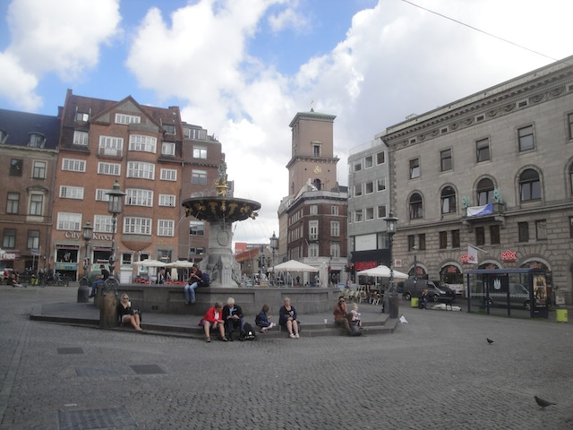
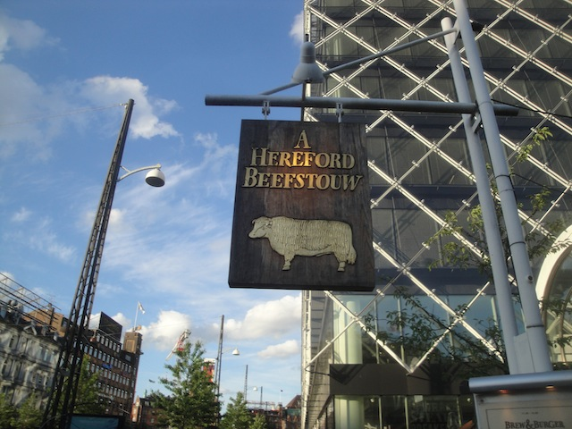

| |
TPR's Scandinavia Trip
Copenhagen
Sommerland Sjaelland Bakken Tivoli Gardens Bon Bon Land Hansa Park Legoland Billund Djurs Sommerland
Tivoli Friheden Farup Sommerland Tusenfryd Liseberg Skara Sommerland Grona Lund Power Park Sarkanemmi Linnemaki
Well, the time has finally come!!! The TPR Scandi Trip has finally begun!!! For a while now, I had been planning on doing Scandinavia in 2014. Ever since the Mega Europe Trip in 2012, I knew immidietly afterwards the plans for the next few years. Texas Road Trip for 2013, Scandinavia for 2014, and Japan for 2015. Well, it's 2014 and it's time for Scandinavia. For the past 2 years, Mega Europe has been the official crown jewel of all my trips. By far the best with nothing coming close. Well Scandinavia begs to differ and not only matches it, but in some ways even exceeds all the awesomeness of the Mega Europe Trip. It was just an amazing trip in so many different ways. And just like the Mega Europe Trip, I prepared for this trip by eating at one of my favorite Mexican Resteraunts the night before.
EXCITEMENT!!!!! On a random sidenote, United Airlines SUCKS!!!! I gotta find a new airline to fly and get miles with. But whatever. EXCITEMENT!!!! =)
Oh crap!!! I knew this part of the world was cold, but not THIS cold!!!
Yay!!! I'm here!!!!
There are so many things we can learn from Denmark. Keep reading the update and watch me smother the country with praise.
Story Time. A bunch of people on the trip were on the second leg of my flight from Newark to Copenhagen. So afterwards, we all were buying our tickets for the metro. I was gonna buy mine and some Danish Woman walks up to me and asks if I wanted her ticket. I said "Sure. Thank you" and saved myself some precious Kroner for this trip. But getting on the metro, I didn't see anyplace to give anyone our ticket. No check, no nothing. I know in Rome, they just checked on the metro, so maybe this worked in a similar way. Either way, I'm just glad I saved myself some money. =)
I spy with my little eyes a Starflyer.
Yep. That's where we'll be staying for the next couple days.
I'll see you in three days Tivoli Gardens.

Today's just our Copenhagen day. Our day to just explore the town, embrace in all of the goodness of Europe, and do normal touristy stuff.
Ooh!! It's the mythical sword in the viking statue. He who pulls it out shall be crowned King of the Doucebags for vandalism of a perfectly good statue.
So that's what happened to Full House. Everyone just ended up in Copenhagen. Hey, I'd move here too.
I remember bringing up Copenhagen during an old conversation with Cody about best place in the world to move to. I stand by that comment from whenever the hell I made it. =)
We need more Happy Walls in this world.
Ross, perhaps if you stopped drinking, you'd realize that not only does she not allign with your orientation, but she's not even real. She's just a picture on a peice of cardboard. Find a real guy dude.
 Dammit!!! When I said "Let's drop anchor here", I just meant lets stop. I didn't mean literally dropping an anchor here. *facepalm*
Dammit!!! When I said "Let's drop anchor here", I just meant lets stop. I didn't mean literally dropping an anchor here. *facepalm*
I gave into the advertising and had a Carlsberg. Not quite as good as the German stuff, but certainly better than all the popular American brands.
Just relaxing by the harbor with a beer. Life is good.
Ok. Time for another Europe vs. America comparison. Open Container Laws. I LOVE the green light on drinking in public here!!! Here in America, we're obsessed with Open Carry and carry these AK-47s into places like Chipotle and everywhere in public. So I can carry around this gun that can murder those strangers with one move of my finger and that's perfectly legal in public, but drinking my beer in public isn't allowed? Get your priorities straight America.
"Cut the chit chat Kevin, grab your beer, and let's hit the town!!!" =)
I'm not sure what's so special about this horse statue, but everyones crowding around it, so it must mean something.
"I just checked all of your resumes and you are all the sorriest excuses for guards I have ever seen!!! You all make me ashamed to be Danish!!!"
But seriously, the Changing of the Guard was pretty cool.
 Yep, I'm in Europe all right.
Yep, I'm in Europe all right.
I see you Ropes Course Building. I'll have fun in you later. =)
Dammit!!! Who's idea was it to go through this tiny little hedge maze!!?
You see that puny little statue right there? One of the biggest tourist attractions in Denmark.
Someday I'll be Part of Your World.
Bah. I don't need to be here. There's a Little Mermaid statue over at Scandia I can see.
While this may look like just some hills to roll down, it's actually one of the best preserved military fortresses in Denmark.
See, I'm not lying. Read for yourself.
Ooh. Pretty Windmill. =)
More prettiness from the Kastellet area.
I love Europe. I really do.
One of the more famous churches in Copenhagen.
Hey, I may hate religion, but they do know how to make good architecture.

A group of us decided to head out to the Steakhouse by Tivoli Gardens for a good meal while other people wound up at a 7-11. Some people did go to Noma, one of the best resteraunts in the world, but I'm not gonna fork out $250 for dinner, so I went with the Steakhouse group.
 Gotta admit. This was a really good steakhouse. Even if I did order the cheapest thing off the menu, it was still delicous and I'm glad I joined everyone.
Gotta admit. This was a really good steakhouse. Even if I did order the cheapest thing off the menu, it was still delicous and I'm glad I joined everyone.
"Hey Everyone!! I found the Red Light District!!"
Rock on Copenkitty!!! Rock on!!!
Well, its been a great first day in Copenhagen. Looking foreword to the Bonus Park tomorrow. =)
Sommerland Sjaelland
Home
|
{kind=link}